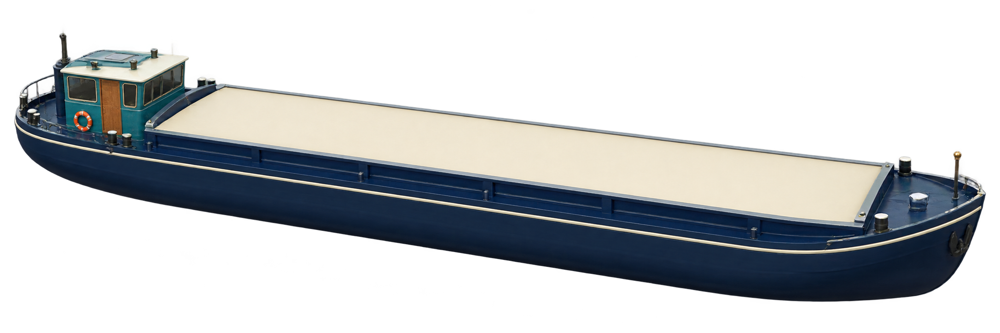

Add a category to each sale
- Two datasets
- One missing match
- INNER
- LEFT
Our sales have a product_id. The product lookup tells us its category.
Sales one row per sale
| sale_id | product_id | amount |
|---|---|---|
| s1 | B1 | 25 |
| s2 | G1 | 40 |
| s3 | B1 | 15 |
| s4 | M1 | 10 |
| s5 | B1 | 10 |
product_id→M1 has no match
Products one row per product
| product_id | category |
|---|---|
| B1 | books |
| G1 | games |
| X1 | accessories |
What should happen to sale s4?
s4 | M1 | 10 | NULLWe want to enrich sales with product categories.For example, B1 links a sale to books. The lookup has one row per product_id.
Sale s4 exists, but its product M1 is missing from the lookup.Pause: should we omit the sale, or keep it without a category?
INNER keeps only sales with a matching product.s4 is absent from the result. The source sales data is unchanged.
LEFT keeps every sale, including s4.Only the missing product category becomes NULL. Next, watch these same five sales pass through both rules.
Same inputs. Different rules.
- Five sales
- Match product_id
- Run INNER
- Rewind · run LEFT
product_idB1 → books · G1 → games · X1 → accessories
s1 · B1 · 25category = booksNow bring all five sales to the same lookup.The lookup has unique product IDs. Four sales can find a product; M1 cannot.
The matching condition is product_id equality.B1 gets books and G1 gets games. M1 has no matching product row.
INNER keeps only matching pairs.Four rows remain. Their amounts sum to 90.
LEFT keeps every sale in this example.All five rows remain, totalling 100. M1 has a NULL category.
Now express it as data
- The same records
- INNER result
- LEFT result
Each boat was a sale. The join adds its matching product category.
| sale | product_id | amount | Product match | INNER | LEFT |
|---|---|---|---|---|---|
| s1 | B1 | 25 | books | KEEP · books | KEEP · books |
| s2 | G1 | 40 | games | KEEP · games | KEEP · games |
| s3 | B1 | 15 | books | KEEP · books | KEEP · books |
| s4 | M1 | 10 | No match | OMIT | KEEP · category = NULL |
| s5 | B1 | 10 | books | KEEP · books | KEEP · books |
| Result rows / sum(amount) | 4 / 90 | 5 / 100 | |||
sales.join(products, "product_id", "inner")sales.join(products, "product_id", "left")A join produces matching row pairs.Here the product lookup has one row per key, so each sale has at most one match.
INNER requires a matching product.s4 / M1 is omitted from the result; the other four sales acquire their categories.
LEFT retains s4 / M1 and sets category to NULL.KEEP describes the row. NULL describes its missing right-side value.
Sometimes we only need to know: does it match?
- Keep matches
- Find missing
sales
The same five amounts · total 100
| sale | product_id | amount |
|---|---|---|
| s1 | B1 | 25 |
| s2 | G1 | 40 |
| s3 | B1 | 15 |
| s4 | M1 | 10 |
| s5 | B1 | 10 |
products
One row per product_id
| product_id | category |
|---|---|
| B1 | books |
| G1 | games |
| X1 | accessories |
Sales only
| sale | id | amount |
|---|---|---|
| s1 | B1 | 25 |
| s2 | G1 | 40 |
| s3 | B1 | 15 |
| s5 | B1 | 10 |
4 known-product sales
| sale | id | amount |
|---|---|---|
| s4 | M1 | 10 |
1 unmatched sale
sales.join(products, "product_id", "left_semi")sales.join(products, "product_id", "left_anti")Semi answers “is there a match?”Keep the matching sales, without adding product columns or multiplying them by right-side duplicates.
Anti answers “which sales have no match?”This is a useful reconciliation check before trusting an enrichment join.
The work hidden in one arrow
- Follow one sale
- Prepare & write
- Fetch & read
- Now join locally
Worker C
Produces shuffle data
Worker A
Runs this join task
From its input partition
Alongside the other B1 inputs
What does it take
to get this record there?
Follow B1 / 10 along the Worker C → Worker A arrow.We have chosen one remote transfer from the diagram you just saw.
The source has to prepare and store the data for its destinations.Even before matching rows, Spark has partitioned, serialized and written shuffle data.
The destination fetches its blocks, then reads and decodes the records.At scale, the bytes written, read and transferred compete for finite disk and network bandwidth.
The join task can now match this sale with its product.The cost depends on how much data must move, how it is processed, and how evenly the work is spread.